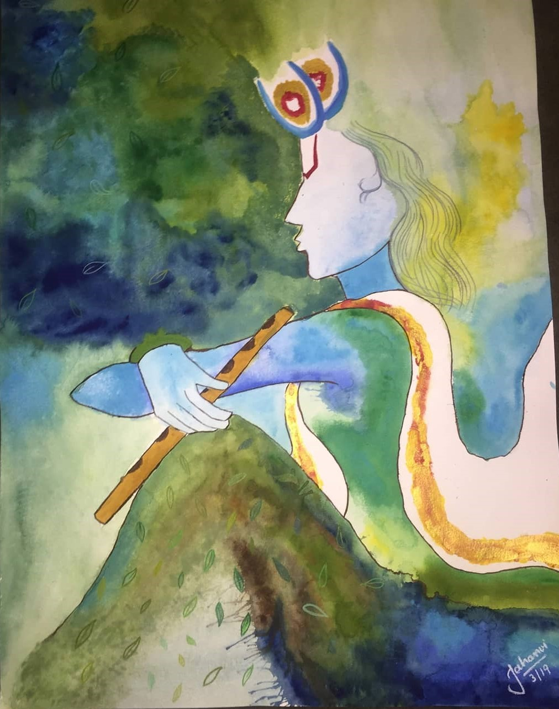
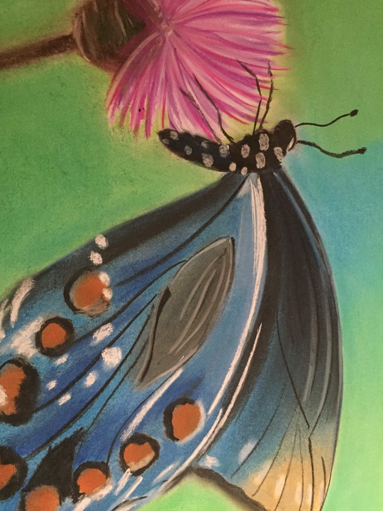
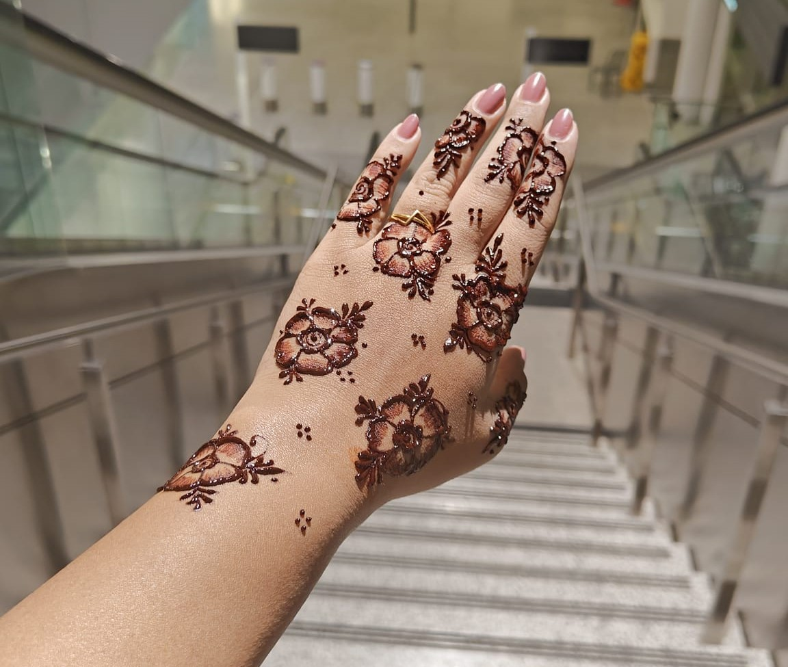

Hobbies
In my free time, I enjoy expressing myself through painting, listening to music, and creating intricate henna art. These hobbies not only relax me but also inspire my work, infusing creativity and energy into my projects.


